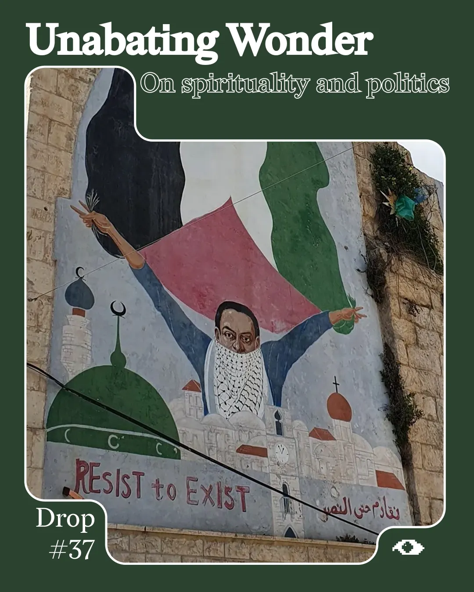
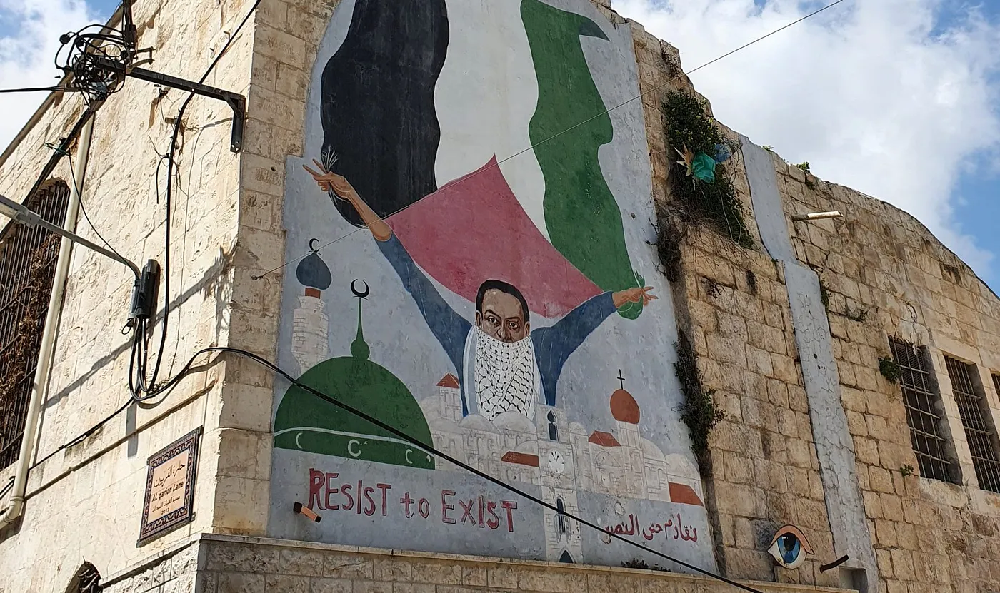

On spirituality and politics in Palestine
Drop #37 · July 22, 2025 · 6 min read
Hey everyone (▰˘◡˘▰)
This week’s Drop was originally published on Arts of the Working Class Issue 37: Transfiguration, which you can buy here. For those who don’t know it, Arts of the Working Class is a multi-lingual street journal “on poverty and wealth, art and society”. It is sold on Berlin’s streets and vendors keep 100% of the sales. A rather unique experiment of autonomy in arts publishing, whose model Sepp Eckenhaussen examined in this detailed piece.
But back to Drop #37. This short article holds particular significance for me. In the piece, I recount my encounter with fragments of the work of Bassel al-Araj, Palestinian theorist and militant, killed by the IDF in 2017. I describe how these fragments resonated with our research on enchantment and political spirituality, on rationality and radicalism. What emerges, I believe, is one of the most immediate understandings of what re-enchantment might truly mean.

"Let it be known that among partisans there is no melancholy!"
- A Ligurian partisan wall newspaper, as quoted in Stefania Consigliere's Fables of Reenchantment
It’s all sedimented in the words of Bassel al-Araj, a Palestinian militant, writer, and theorist. Bassel al-Araj was born in 1984 in al-Walaja, West Bank, Palestine, and was killed on March 5th, 2017, in al-Bireh, West Bank, Palestine. He was 33 when he was fatally shot by the occupying forces of the Israel Defence Forces. The Israelis held Bassel's body for eleven days before giving it to his family for burial in al-Walajah.
When the IDF broke into his house, Bassel was doing what he always did—writing. His intellectual activity was frenetic: he organized educational bus tours to recount the history of Palestinian cities and villages. He was researching for the Palestinian Museum and teaching for the Popular University when he died, restlessly living by his motto: If you want to be an intellectual, you’d better be an engaged one.
Most of his writing has been collected in a posthumous publication titled “I Have Found My Answers” (Arabic: وجدت أجوبتي), following the will he wrote before his violent departure.
Unfortunately, a language gap keeps me at a distance from al-Araj’s collection, as I don’t know Arabic. Yet, a fragment of his work reaches me, thanks to the precious dissemination of his work by Hazem Jamjoum, a doctoral candidate in the modern history of the Middle East at New York University. Published on Liberated Texts, Jamjoum’s piece reports on Bassel's life and opus in English, disclosing this treasure to a wider audience, myself included.
According to Jamjoum, the text Bassel was writing when the IDF broke into his house was titled “Why do We go to War?”. It sought to find answers to the tireless steadfastness and fighting spirit of the Palestinian resistance, but it also speaks to all those who fight against oppression by global imperialist capital at any latitude. How does Bassel answer his question? Somehow betraying the revolutionary tradition, historical materialism, and analyses of power, Bassel responds that the reason they continue to fight is contained in the word al-romansiyyah, romanticism, an ineffable passion for resistance and justice that continues to push beyond any instrumental and rational calculation. Then come the few lines—nothing more than a fragment of an entire production—that make my hands tremble. As Jamjoum translates:
You, the academically inclined, set your sights on disenchanting all things by defining and explaining, reckoning that it will land you on the truth. In these overcast days, I tell you I need no explanatory framework for rainfall—whether it is Thor’s hammer or God’s mercy or meteorologists’ consensus. I want none of it. What I want is my unabating wonder and my silly smile whenever the rain falls. Every time, as if for the first time, a child bewitched and the magic of the world.
In the end, Bassel appeals to the magic of the world. Lucid analyses of the Israeli colonialist machine are not enough; critical readings of global capitalism are not enough. There is an element that escapes calculation, an excess of life that ends up giving meaning to an individual’s entire experience. You can call it magic, spirituality, or religion; at this level, it doesn’t matter. It is a process of meaning production that forges a collectivity, that actualizes a common intent and a framework in which events have a place. It is the realm of the pre-political as well as the ground where politics, in the strict sense, blossoms. I call it—echoing Bernard Stiegler and Silvia Federici, Federico Campagna and Luciano Parinetto—re-enchantment of the world.
To speak of the re-enchantment of the world means to speak of a potential process opposite to that diagnosed by the German sociologist Max Weber in 1919, called conversely the disenchantment of the world, or, in German, Die Entzauberung der Welt. Entzauberung is to be understood as a loss of Zaubern, that is, of the charm of the world. The unabating wonder that Bassel writes about is found in the ineffable stupor that something as simple and materially explainable as rainfall can spark in human beings.
He, thus, echoes Aby Warburg, the visionary German art historian, in his reflections on the Hopi Serpent Ritual from 1923. Briefly, Warburg studies how the Hopi symbolized and ritualized natural forces such as lightning, converting their fear of natural forces into symbolic representations in art and ritual. Meaning-making practices defeat the necessity for causal explanation. “A silly smile whenever the rain falls,” a reconciliation with wonder for the world, it doesn't matter if it’s raining because of God’s Mercy or meteorologists’ consensus.
In apocalyptic times, times when entire worlds disappear, we must resort to wonder, to keep “the optimism of the will”―in the words of Antonio Gramsci—with us; the cursed beauty of the struggle, the endless magic of the world we belong to and with which we resonate together. “Il politico è l'elevamento a potenza della spiritualità umana,” / “The political is the elevation to power of human spirituality,’ I hear an Italian friend say in a heated conversation over coffee. But this political dimension must be warmed, bound together by the same spirituality and magic. We do not know a better world, but we can believe in the infinite amendability of this world.
We must, therefore, sabotage the process of disenchantment. More than a mere epistemological shift, the progressive loss of magical (more-than-rational?) knowledge constitutes the systematic erasure of marginalized and colonized communities’ intellectual heritage. What started in the heart of Western Europe expanded all over the planet. It is the spiritual consequence of capitalism’s process of primitive accumulation. Its victims are indigenous populations, the witches and alchemists of Europe, nomadic peoples, and any Lebensform that embodied an alternative to the reductio ad unum of patriarchal and monotheistic capital.

It is no coincidence, then, that in the heart of Palestinian resistance, where the imperialist process of primitive accumulation repeats itself every day, the seeds of re-enchantment are planted. When Bassel speaks of “unabating wonder”, he reveals how enchantment itself becomes resistance: the ability to remain captivated by life’s magic despite systematic oppression is not escapism, but a profound refusal to surrender one’s humanity to the colonizer's rationality.
To be able to survive through the process of worlds fading and to live against and within the apocalypse.